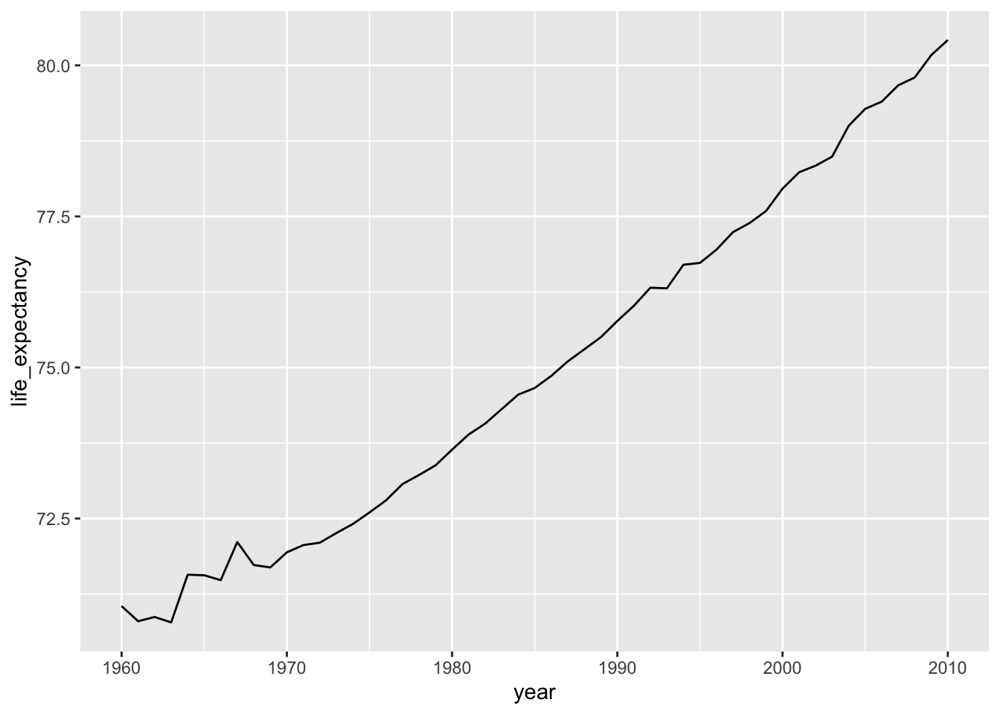
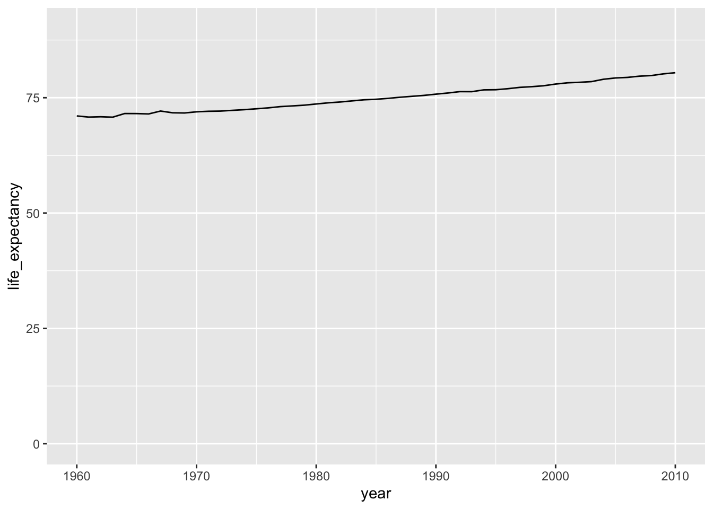
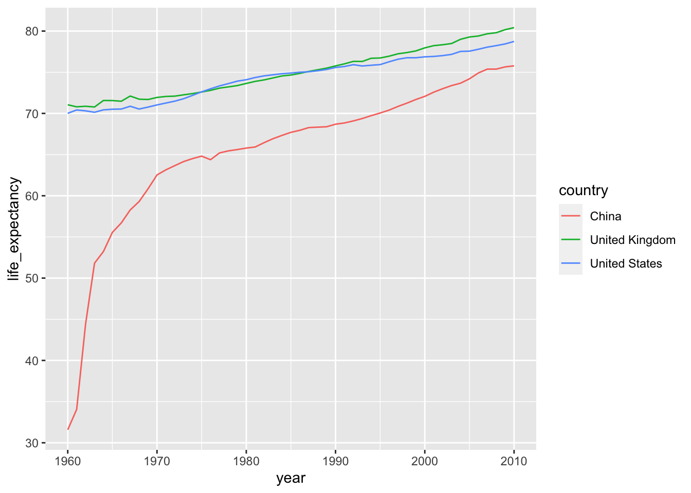

Looking for changes
- Be able to visualise changes in data
Libraries and functions
Libraries
Functions
Libraries
Functions
Purpose and aim
In this section we’re going to look at dealing with data that changes. This can be when you’ve got a data for different points in time, or perhaps some response to different concentrations.
Here the change over time or in concentration may show some interesting properties.
Loading data
We’ll be using a new data set for this section - it contains similar information as the gapminder data set we’ve used so far, but it has data for different years. There is data from 1960 to 2010.
gapminder1960_2010 <- read_csv("data/gapminder1960to2010_socioeconomic.csv")Changes over time
Let’s say we’re interested in life expectancy. We now have data on this variable for 50 different years, so it’d be nice to see how life expectancy changed over time.
There are 193 countries in this data set, so it’s probably not a good idea to plot them all at once…
Let’s focus close to home and see how life expectancy changed in the United Kingdom. To do this, we first filter out all of the data of the United Kingdom, and then plot it.
gapminder1960_2010 %>%
filter(country == "United Kingdom") %>%
ggplot(aes(x = year,
y = life_expectancy,
group = country)) +
geom_line()
We can see that life expectancy has increased markedly over the last 50 years. Notice that the y-axis is in a range of around 70 - 85! If we’d change that so that the y-axis started at zero, then our plot would look rather different.
We can set the y-axis range or limits with ylim(), specifying the first and last value that we want in the plot:
gapminder1960_2010 %>%
filter(country == "United Kingdom") %>%
ggplot(aes(x = year,
y = life_expectancy,
group = country)) +
geom_line() +
ylim(0, 90)
These two plots show the same data, but the clarity of the message is rather different.
These plots of course show only data for one country, so it doesn’t give us much context. How impressive is the increase in life expectancy in the United Kingdom, compared to other countries? We know that, for example, the United States and China have had a lot of economic growth in the past 50 year, so let’s compare the United Kingdom with them.
We adjust the filter that we used earlier, to include the United States and China. We also colour the data by country, so that we can distinguish the three countries.
gapminder1960_2010 %>%
filter(country %in% c("China", "United Kingdom", "United States")) %>%
ggplot(aes(x = year,
y = life_expectancy,
colour = country,
group = country)) +
geom_line()
%in% syntax
We use %in% when we want to compare against a collection of values. Let’s look at a very simple data set called colours, which contains 5 different colour values:
colours# A tibble: 5 × 1
value
<chr>
1 green
2 yellow
3 yellow
4 red
5 purpleIf we wanted to filter out the yellow and purple values, we could do that like this:
filter(colours, value %in% c("yellow", "purple"))# A tibble: 3 × 1
value
<chr>
1 yellow
2 yellow
3 purpleWhat happens is that R goes through each item after %in% and checks if it can find it in the value column. So in this case it first checks yellow, followed by purple.
From this plot we can see that the United Kingdom and United States show very similar increases in life expectancy, roughly increasing by 10 years.
However, plotting this together with China’s life expectancy, it shows that China has seen a much larger increase over the past 50 years, since its life expectancy was only just above 30 year in 1960!
Exercises
Key points
- Visualising changes over time is a powerful tool to detect trends
- Decisions on axis limits can dramatically change the message